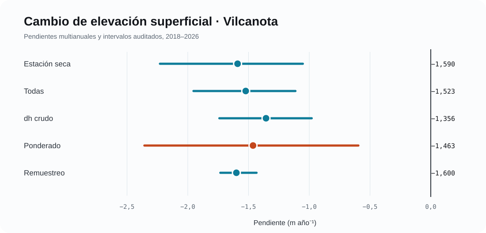
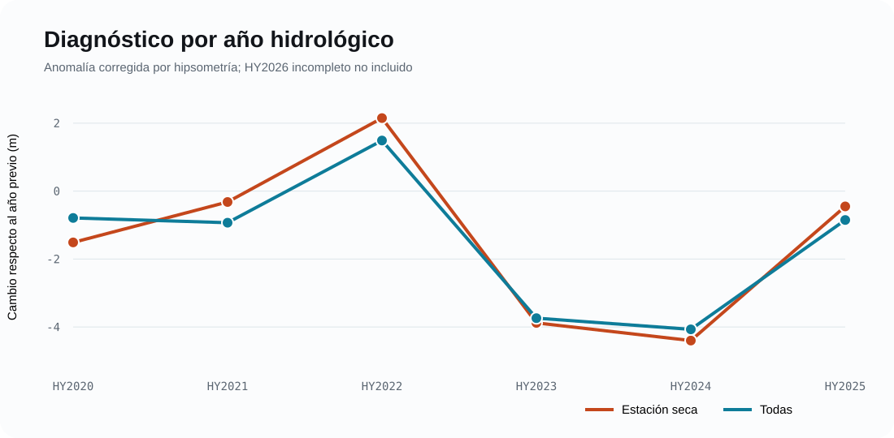

Cambio de elevación con ICESat‑2
Cordillera Vilcanota, 2018–2026
ICESat-2
Vilcanota
criósfera
Resultados auditados de cambio de elevación superficial glaciar con ICESat-2 ATL06-SR y COP30.
Datos y control de calidad
La consulta recuperó 639 415 segmentos ATL06‑SR. Después de aplicar el AOI y el control de calidad permanecieron 27 160 puntos glaciares y 141 868 puntos de terreno estable, distribuidos en 129 pasadas y ocho RGT.
El DEM COP30 fue convertido de alturas ortométricas EGM2008 a elipsoidales, con corrección geoidal cercana a 47.1 m. Tras el co‑registro, la mediana estable pasó de −0.607 a −0.152 m y luego a −0.008 m con corrección residual; el NMAD final fue 4.631 m.
Tendencia principal

| Estimador | Pendiente (m año⁻¹) | Intervalo | Interpretación |
|---|---|---|---|
| Estación seca, h′ | −1.590 | IC95% −2.229 a −1.053 | Producto primario por menor influencia de nieve estacional |
| Todas las observaciones, h′ | −1.523 | IC95% −1.953 a −1.114 | Sensibilidad temporal |
| dh crudo | −1.356 | IC95% −1.740 a −0.980 | Sin corrección hipsométrica |
| Ponderado por hipsometría | −1.463 | IC95% −2.357 a −0.596 | Resultado regional |
| Remuestreo hipsométrico | −1.600 | P5–P95 −1.732 a −1.434 | 50 iteraciones de sensibilidad |
Años hidrológicos

La suma diagnóstica relativa a HY2020 alcanza −6.90 m para estación seca y −8.10 m para todas las observaciones hasta HY2025. No equivale a un balance de masa geodésico completo.
Lo que puede afirmarse
- Existe descenso superficial multianual robusto cercano a 1.5 m año⁻¹.
- La pérdida es mayor en cotas bajas y medias-bajas.
- Los estimadores independientes convergen.
Lo que todavía requiere cierre
- Depurar la máscara de terreno estable y cuantificar sensibilidad del NMAD.
- Documentar fuente/año nominal del inventario glaciar.
- Ejecutar pruebas leave-one-year-out y leave-one-RGT-out.
- Evitar atribución causal a incendios sin evidencia atmosférica sincronizada.